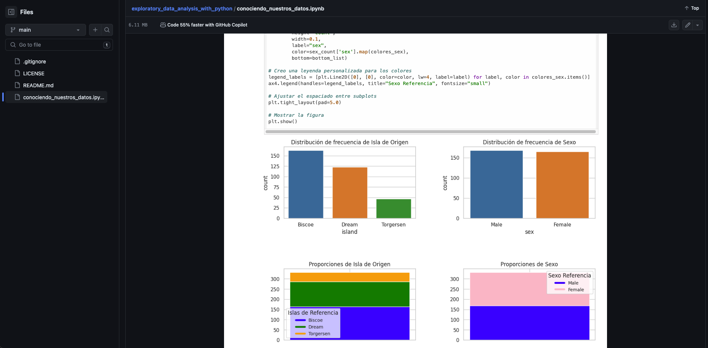
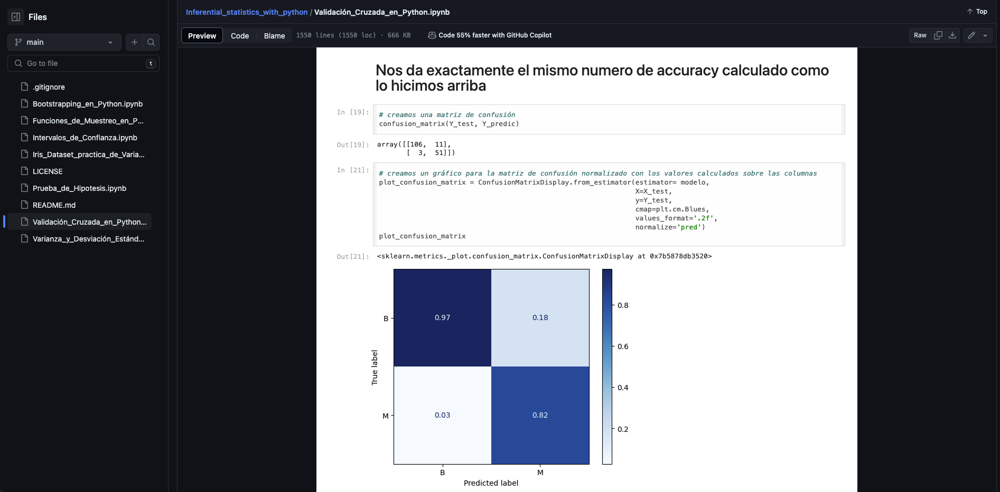
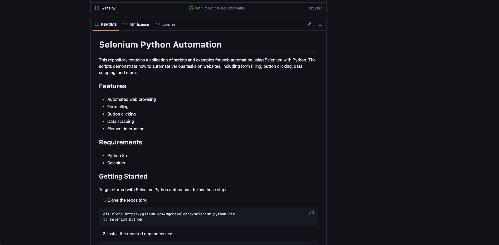
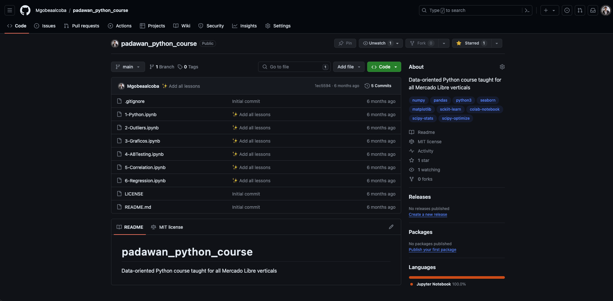
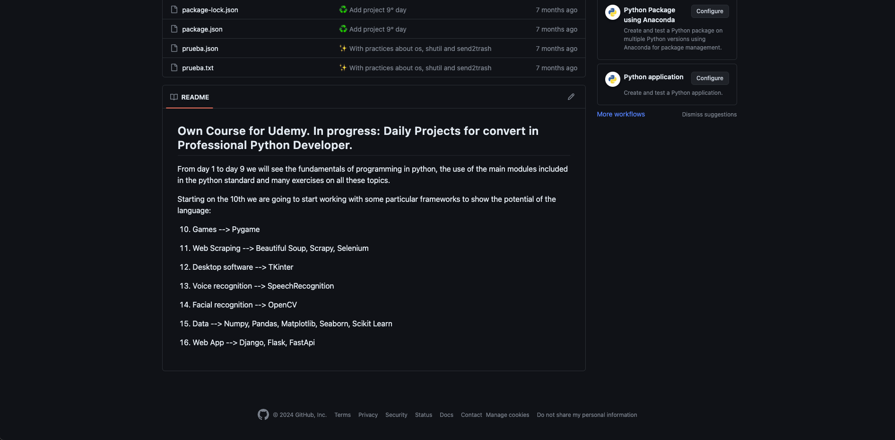
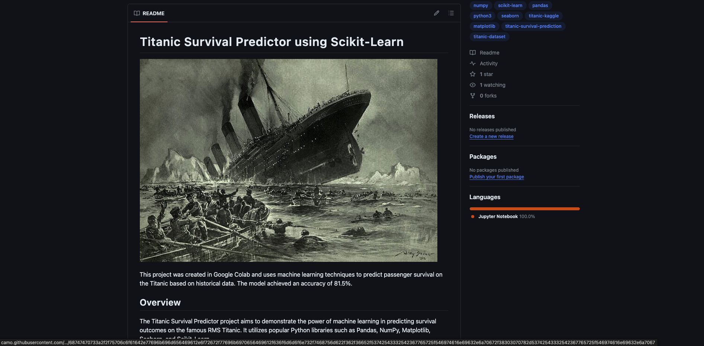
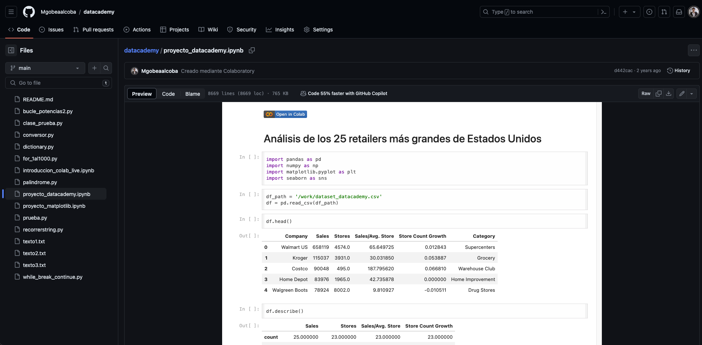

Nuestro Porfolio
Exploratory Data Analysis with Python
Un recopilado de distintas tecnicas de EDA aplicadas a un caso de uso con el objetivo de mostrar las potencialidades de Python para hacer EDA
Inferential Statistics with Python
Distintos ejemplos aplicados a un caso de como Python nos brinda grandes herramientas de estadística inferencial que nos permitirán conocer el comportamiento futuro probable de nuestros productos o servicios
Selenium Python
Uso de selenium para probar flujos en páginas web productivas y para realizar scraping de datos para analizar el mercado o la competencia.
Padawan Python Course
Curso de Python para análisis de datos armado y dictado por Mariano Gobea Alcoba durante 2023 para más de 100 miembros de Mercado Libre. Contar con el personal de nuestra compañia con capacidades analíticas fuertes es fundamental si queremos aprovechar lo que los datos tienen para decirnos.
All Python for Everybody
Un curso de Python absolutamente completo. Para aquellos que no se aprendieron a analizar datos con Python pero no se conforman y ahora quieren aprender a hacer una Web App, un videojuego, hacer Web Scrapping, un asistente guiado por voz, un software de reconocimiento fácil, etc.
Titanic Survival Predictor using Scikit Learn of Python
Este proyecto fue creado en Google Colab y utiliza técnicas de aprendizaje automático para predecir la supervivencia de los pasajeros del Titanic basándose en datos históricos. El modelo logró una precisión del 81,5%.
Datacademy Challenge
Proyecto de análisis exploratorio de datos (EDA) realizado que funcionó como un modelo para un concurso
en el que este trabajo fue seleccionado entre los 10 mejores con más de 1500 participantes.
